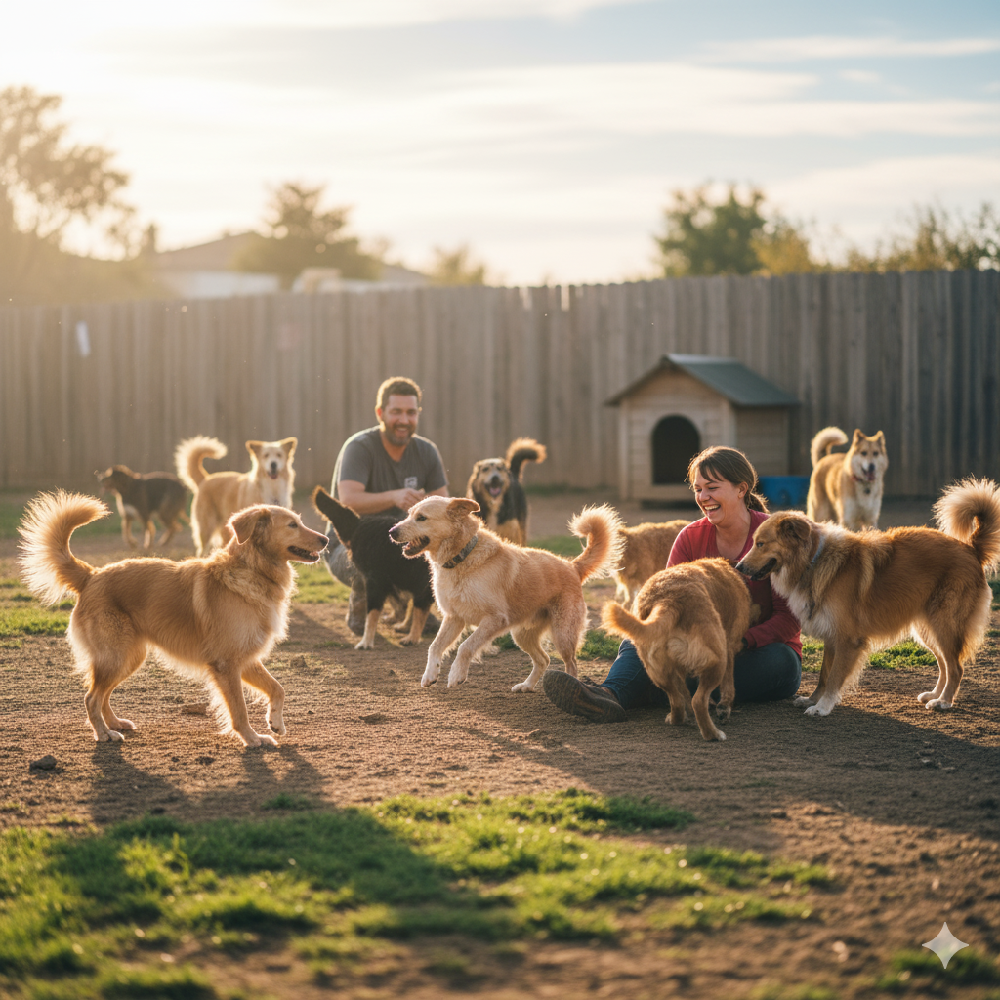

Bem-vindo ao AmiCão! Novo!
Acreditamos que todo animal merece uma segunda chance. Trabalhamos incansavelmente para resgatar, reabilitar e encontrar lares amorosos para cães e gatos em situação de rua na nossa cidade.
Nossa equipe de voluntários dedicados garante que cada animal receba cuidados veterinários, alimentação adequada e muito carinho.
Nosso Propósito
Com anos de dedicação, já conseguimos transformar a vida de centenas de animais. Nosso compromisso é com o bem-estar e a felicidade, um resgate de cada vez.
Venha nos conhecer e descubra como você pode fazer a diferença na vida de um animal.
